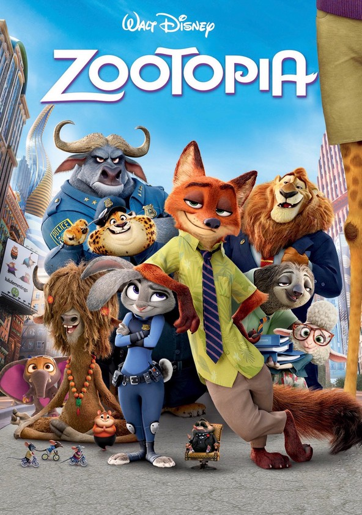

¡Hola! Soy Gisela Colmeiro
Desarrolladora Web & Apasionada por la Tecnología
Sobre Mí
Soy desarrolladora Full Stack, QA Tester y diseñadora UX/UI, con una fuerte pasión por la tecnología y la creatividad. Me motiva transformar ideas en soluciones digitales funcionales y atractivas, combinando desarrollo, diseño y experiencia de usuario. Disfruto explorar nuevas herramientas y tendencias, manteniéndome en constante aprendizaje para adaptarme a las demandas del mercado. Mi perfil analítico y detallista me permite detectar errores con facilidad y asegurar la calidad de cada proyecto en el que participo. Me interesa especialmente el diseño de interfaces para crear experiencias visuales claras y efectivas. Mi misión como desarrolladora es construir productos digitales innovadores, eficientes y centrados en el usuario, aportando valor a través de la tecnología. mas resumido
ConocemeMis proyectos
MundoTrip
Desarrollé un sitio web para una agencia de viajes, enfocándome en la experiencia del usuario y la presentación visual de destinos
AutoDrive
Desarrollé un sitio web para una concesionaria de autos, enfocándome en la navegación intuitiva y la exhibición de vehículos

VetCare
Desarrollé un sitio web para una veterinaria, enfocándome en la gestión de citas y la comunicación con los clientes
Habilidades
Tecnologías Dominantes
Tecnologías Deseadas
Hobbies
Películas Favoritas
Harry Potter
Una saga mágica que combina aventura, amistad y valentía. Acompaña el crecimiento de Harry y sus amigos en un mundo lleno de hechizos y desafíos.
F1 Movie
Una película emocionante que captura la adrenalina, la velocidad y la pasión del mundo de la Fórmula 1, mostrando la intensidad de este deporte.

Zootopia
Una historia divertida y reflexiva sobre diversidad y superación, protagonizada por una coneja policía que lucha por cumplir sus sueños.